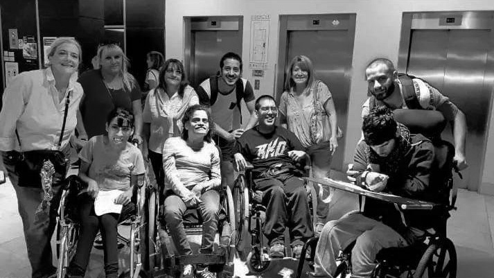
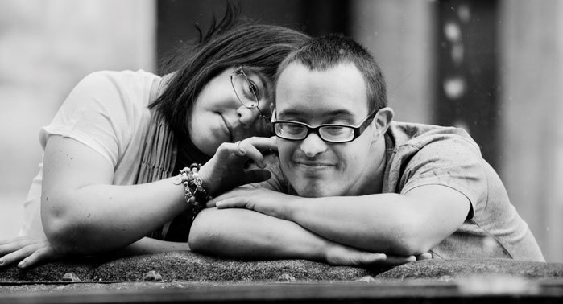

<div class="container contenido-principal d-flex flex-column">
    <section>
        <div class="d-flex flex-column align-items-center contenedor-imagen-enlace">
            <h2 class="text-center">MISIÓN</h2>
            <div class="contenedor-imagen">
                <figure>
                    
                    <figcaption>Conocé más sobre la misión principal de la asociación</figcaption>
                </figure>
            </div>
            <div class="div-texto-ver-mas d-flex flex-column">
                <p class="oculto lead">Somos una asociación civil sin fines de lucro que tiene como fines sociales la
                    atención de personas jóvenes y adultas con discapacidad en el aspecto social, laboral y personal y
                    la concientización en la comunidad de la problemática de la discapacidad
                    Brindando servicios de atención integral tendientes a mejorar su calidad de vida mediante, la
                    igualdad de oportunidades, la promoción de la inclusión social y el trabajo de apoyo a la familia.
                </p>
                <button class="btn btn-brown btn-ver-mas align-self-center" type="button" id="btn-ver-taller">Ver
                    más</button>
            </div>
        </div>

        <div class="d-flex flex-column align-items-center contenedor-imagen-enlace">
            <h2 class="text-center">VISIÓN</h2>
            <div class="contenedor-imagen">
                <figure>
                    
                    <figcaption>Entérate de nuestra filosofía y nuestra visión</figcaption>
                </figure>
            </div>
            <div class="div-texto-ver-mas d-flex flex-column">
                <p class="oculto lead">"Ser una organización líder en la promoción de la inclusión y el bienestar de niños
                    con discapacidad, proporcionando servicios y apoyos que mejoren su calidad de vida, fomenten su
                    autonomía y garanticen su plena participación en la sociedad. Aspiramos a construir una comunidad
                    donde la diversidad sea valorada y todos los niños, independientemente de sus capacidades, tengan
                    las mismas oportunidades para desarrollarse y prosperar."
                </p>
                <button class="btn btn-brown btn-ver-mas align-self-center" type="button" id="btn-ver-taller">Ver
                    más</button>
            </div>
        </div>

        <div class="d-flex flex-column align-items-center contenedor-imagen-enlace">
            <h2 class="text-center">OBJETIVOS</h2>
            <div class="contenedor-imagen">
                <figure>
                    
                    <figcaption>Explora nuestros propósitos y objetivos</figcaption>
                </figure>
            </div>
            <div class="div-texto-ver-mas d-flex flex-column">
                <ul class="oculto">
                    <li class="lead">Actuar en pos de un mundo socio-laboral más inclusivo, teniendo como pilares básicos la
                        integración
                        en la sociedad por medio del trabajo, la socialización y la creación y equiparación de
                        oportunidades
                        a través de :</li>
                    <li class="lead">Ofrecer y gestionar un Taller Protegido de Producción para posibilitar la inserción laboral de
                        personas con discapacidad, generando puestos de trabajo y brindando servicios de adaptación
                        laboral
                        y social acordes a las posibilidades, necesidades e intereses.</li>
                    <li class="lead">Ofrecer y gestionar un Centro de Día, para aquellas personas que se ven imposibilitadas de
                        acceder
                        al taller protegido., proponiendo vivencias integradoras y socializadoras tendientes a alcanzar
                        y
                        desarrollar el máximo posible de sus potencialidades.</li>
                    <li class="lead">Ofrecer un Hogar Permanente Para personas, que por situaciones clínicas o socio familiares no
                        puedan
                        acceder a las necesidades básicas de vivienda, y protección social ofreciéndoles refugio y
                        seguimiento apropiado.</li>
                    <li class="lead">Realizar actividades extra-laborales, recreativas y socializantes como: Encuentros Deportivos
                        Recreativos. Natación. Equino-terapia. Talleres de Cocina, Pintura, Música, Actuación teatral,
                        Expresión Corporal y Actividad folklórica.</li>
                    <li class="lead">Difundir, informar e integrar a la comunidad a las actividades de la asociación, permitiendo la
                        participación ciudadana solidaria, mediante la difusión continua y la mejora de las
                        infraestructuras
                        de servicio a los beneficiarios.</li>
                </ul>
                <button class="btn btn-brown btn-ver-mas align-self-center" type="button" id="btn-ver-taller">Ver
                    más</button>
            </div>
        </div>
    </section>
</div>